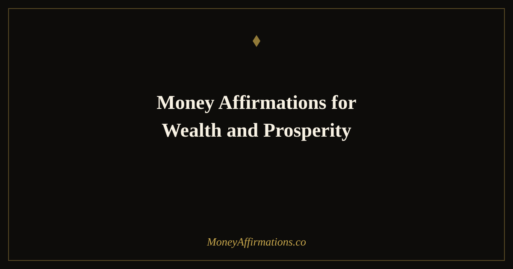

Money Affirmations for Wealth and Prosperity: 30 Powerful Statements

Money, wealth, and prosperity are three distinct but deeply related concepts — and the most powerful affirmation practice works on all three simultaneously. Money is the medium of exchange, the daily tool of financial life. Wealth is what accumulates when money is managed with discipline and intention over time. Prosperity is the experiential dimension: the feeling of financial thriving, of living a life that is growing and flourishing in ways that are aligned with your values. These money affirmations for wealth and prosperity address the beliefs that underpin all three.
When your relationship with money is healthy, wealth builds naturally and prosperity follows. When it is unhealthy — marked by fear, scarcity, guilt, or passivity — even high incomes fail to produce lasting wealth and even good financial conditions fail to produce a genuine sense of prosperity. These 30 affirmations work on the underlying relationship, rewiring the beliefs that determine how you earn, how you spend, how you save, and how you experience your financial life.
What are money affirmations for wealth and prosperity?
Money affirmations for wealth and prosperity are present-tense statements that address all three dimensions of financial health simultaneously. They work on your daily relationship with money (how you earn it, receive it, and manage it), your wealth-building identity (the belief that you are someone who accumulates and grows financial assets), and your prosperity orientation (the experiential sense that your financial life is flourishing and aligned with what matters most to you).
For the complete set of money-focused affirmations that support this integrated practice, the money affirmations collection provides the broader foundation, and the wealth affirmations collection provides depth on the asset-building dimension.
30 money affirmations for wealth and prosperity
- I have a healthy, positive, and prosperous relationship with money and it shows in every financial decision I make.
- Money flows to me consistently and I use it wisely to build lasting wealth and a prosperous life.
- I am wealthy, I am prosperous, and I live a financial life that reflects both every day.
- My relationship with money is one of respect, intelligence, and genuine abundance.
- I earn well, save consistently, invest wisely — and the wealth and prosperity I am building compound quietly every month.
- Money is a tool that serves my highest values and I direct it with clarity and intention.
- I am prosperous in every sense — financially, professionally, and in the richness of the life I am creating.
- My wealth grows because I have made the decision to think, act, and invest like someone who builds lasting financial assets.
- I am at peace with money — it comes to me easily, stays with me willingly, and grows in my care.
- Prosperity is not an accident — it is the result of deliberate choices, and I make those choices daily.
- I release every money story that kept me small and replace it with the truth: I am capable of extraordinary financial growth.
- My income grows consistently because I create real value and I claim fair compensation for it without hesitation.
- I invest my money in assets that work for me, building wealth while I sleep, work, and live my life.
- Financial prosperity is my natural state — I inhabit it fully and I expand it deliberately.
- I manage money well because I respect it, understand it, and have decided it will work in my favour.
- Wealth accumulates in my life because I am consistent, patient, and refuse to stop building.
- I am prosperous enough to be generous — and my generosity returns to me multiplied.
- Money is drawn to my clarity of purpose, my depth of skill, and my willingness to serve well.
- I hold a wealthy mindset in every interaction with money — earning, spending, saving, and giving.
- My financial life is a reflection of my best choices — and my choices are improving every single day.
- Prosperity for me means financial freedom, meaningful work, and the ability to live fully — and I am building all of it.
- I am not in competition with anyone for wealth — there is enough, it is growing, and my portion is already flowing toward me.
- My wealth builds on itself — each good decision creates the conditions for the next, and the next, and the next.
- I take my financial life seriously and I invest in my money knowledge, habits, and mindset consistently.
- Prosperity is already present in my life and it deepens every week because I tend to it with care.
- I am grateful for every pound, dollar, and financial opportunity — gratitude is part of my wealth strategy.
- My money works harder for me each year because I deploy it more wisely with every passing month.
- Wealth and prosperity are available to me in this lifetime — fully, completely, and without compromise.
- I am the kind of person who builds wealth steadily, enjoys prosperity genuinely, and shares generously.
- My financial life is prosperous today, more prosperous tomorrow, and increasingly abundant with every year that passes.
How to use these affirmations
Choose three to five of these affirmations for a daily morning practice and speak them aloud with full presence and intention before engaging with work, devices, or the demands of the day. For each affirmation you choose, also identify the belief it targets — what old story about money does it replace? Making this connection explicit accelerates the rewiring, because you are not just installing a new belief but consciously displacing an old one.
Use situation-specific affirmations at key financial moments: immediately before a salary conversation, before reviewing your monthly finances, before making an investment, or before any moment where anxiety or scarcity thinking tends to surface. Two or three spoken affirmations in the minute before these events changes the psychological state you bring to them and, over time, changes their outcomes. Track the shift in how these moments feel over 30, 60, and 90 days of consistent practice.
How rewiring money beliefs produces compounding financial results
The beliefs you hold about money are not just feelings — they are operational programs that run every financial decision you make. Research in financial psychology consistently shows that money beliefs formed in childhood and early adulthood remain operational into adult financial life unless they are actively and deliberately replaced. They determine your pricing, your saving behaviour, your willingness to invest, and your tolerance for financial risk. They are the invisible architecture beneath every financial outcome.
Money affirmations for wealth and prosperity work by systematically replacing limiting money programs with expansive ones. The process is not instantaneous — neural plasticity requires repetition, presence, and time — but it is reliable. Studies on self-affirmation consistently show that regular practice produces measurable changes in financial decision quality within four to eight weeks. The compound effect of better financial decisions, made more consistently over years, is the mechanism through which affirmation practice produces wealth and prosperity outcomes that appear, to outside observers, to be simply the result of discipline, talent, or luck.
Tips to make them work faster
- Identify your most limiting money belief and target it directly. If you believe money is hard to keep, focus on affirmations 8, 9, 13, 15, 23. If you believe you do not deserve prosperity, focus on 3, 7, 14, 21, 28. Precision accelerates transformation.
- Speak them in front of a mirror once per week. Eye contact with yourself while speaking affirmations is neurologically activating in a way that regular practice is not. Once weekly, this adds significant depth to the daily work.
- Create a money ritual that begins with affirmations. Before any significant financial task — budgeting, investing, reviewing — start with three affirmations. Associate good money behaviour with a positive psychological state.
- Read and study money. Affirmations build the belief; knowledge provides the tools. Every book on personal finance you read makes the wealth and prosperity affirmations more credible and more grounded.
- Give yourself credit for every financial improvement. The story of your financial life is being rewritten. Note every chapter that is better than the last one.
Frequently Asked Questions
What makes money affirmations for wealth and prosperity different from other money affirmations?
This combination specifically targets the integrated belief in both accumulation and flow. Wealth affirmations address the discipline and identity of someone who builds and holds financial assets. Prosperity affirmations address the sense of financial thriving — the feeling that your financial life is growing, flourishing, and aligned with your deepest values. Together, they work on the full picture: the asset-building behaviour and the experiential richness that makes wealth meaningful rather than merely numerical.
How do money beliefs affect actual wealth outcomes?
Money beliefs operate as filters on financial reality. Someone who believes money is scarce notices scarcity and acts from it — underpricing their work, avoiding investments, hoarding rather than growing. Someone who believes money is abundant and flowing notices opportunity and acts from it — asking for more, investing confidently, building multiple income streams. The same external circumstances produce wildly different financial outcomes depending on the beliefs operating beneath them. Money affirmations for wealth and prosperity work by systematically changing those beliefs at the level where they operate: automatic thought.
Is it better to use money affirmations in the morning or before specific financial interactions?
Both have distinct value and the combination is more powerful than either alone. Morning practice builds the baseline identity — the general orientation toward wealth and prosperity that influences all decisions throughout the day. Situation-specific use, immediately before a salary negotiation, a major purchase decision, or a review of your finances, activates the specific beliefs most needed for that moment. Think of the morning practice as building the foundation and the situation-specific use as applying the right tool at the right moment.
Wealth and prosperity are built on the quality of your daily relationship with money — and that relationship starts in your mind. Explore the full wealth affirmations collection for the complete set of statements that support your financial transformation.